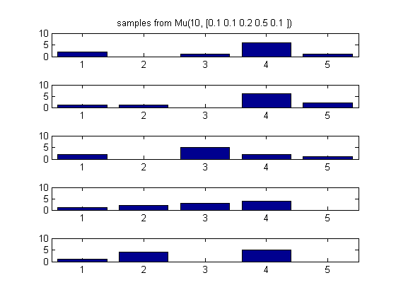

Plot samples drawn from a multinomial
setSeed(1); pr = [0.1, 0.1, 0.2 0.5, 0.1]; N = 10; prStr = sprintf('%3.1f ', pr); %p = MultinomDist(N, pr); n = 5; % num samples %X = sample(p, n); X = mnrnd(N, pr, n); % stats toolbox figure; for i=1:n subplot(n,1,i); bar(X(i,:)); set(gca,'ylim',[0 10]); if i==1, title(sprintf('samples from Mu(%d, [%s])',N, prStr)); end end